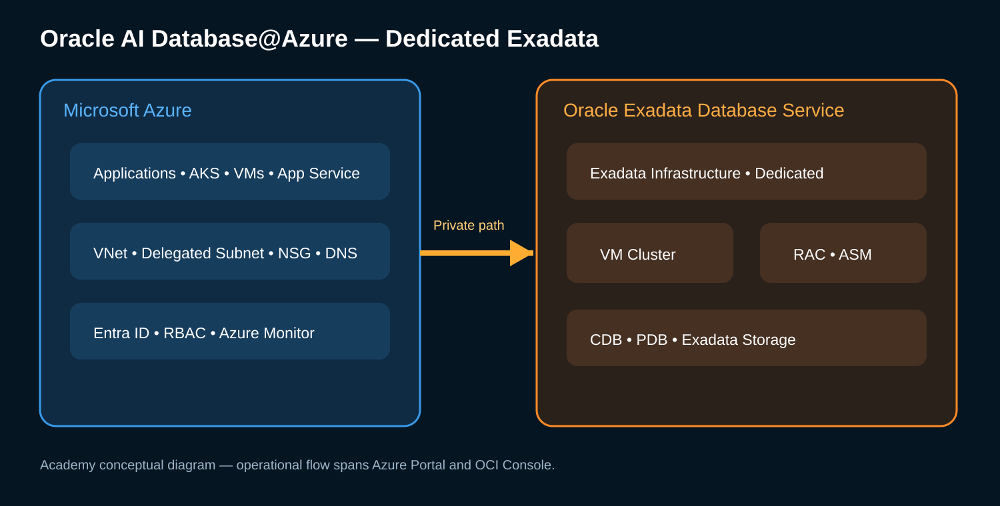
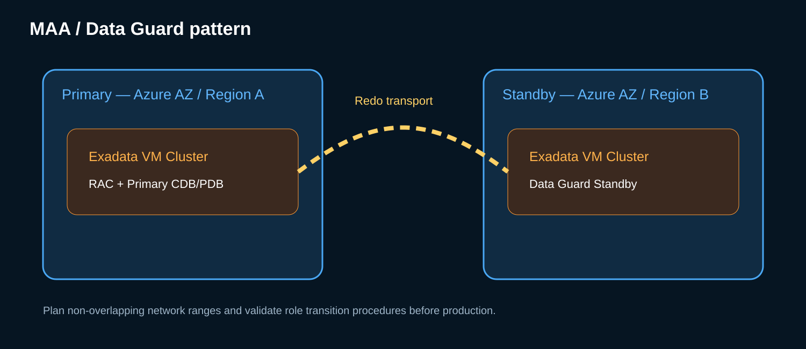

01
Pré-requisitos e Resource Providers
Azure Portal → Subscriptions → Resource providers. Confirme permissões e registre Oracle.Database, Microsoft.BareMetal, Microsoft.Network e Microsoft.Compute.
Formação técnica completa: arquitetura, onboarding, deployment end-to-end, RAC, ASM, database, backup, Data Guard, performance, monitoramento, patching, troubleshooting e automação.

O progresso é salvo apenas neste navegador. Exporte um arquivo de backup para não perdê-lo ao trocar de dispositivo ou limpar o cache.
Os procedimentos usam placeholders para subscription, região, CIDRs, nomes e OCIDs. Valide sempre os valores do seu ambiente e a documentação oficial vigente.
Aplicações permanecem no ecossistema Azure enquanto o serviço Oracle entrega a camada de banco Exadata integrada à rede e identidade do Azure.
RAC protege contra falhas locais do cluster e Data Guard amplia a proteção para outra zona ou região, conforme requisitos de RTO/RPO.

Caminho operacional completo, em ordem: Azure/OCI onboarding → rede → Exadata Infrastructure → VM Cluster → CDB/PDB → validação → backup → observabilidade → DR.
Clique em qualquer etapa para abrir o passo a passo completo (checklist, tela simulada e terminal). Each stage contains prerequisites, portal path, values, validation, rollback and official references.
Azure Portal → Subscriptions → Resource providers. Confirme permissões e registre Oracle.Database, Microsoft.BareMetal, Microsoft.Network e Microsoft.Compute.
No Azure Marketplace/Oracle AI Database@Azure, conclua Public Offer ou Private Offer. Revise billing, consent e criação do OracleSubscription.
Após a compra, vincule a tenancy OCI conforme o tipo de oferta. Public Offer exige nova tenancy; Private Offer pode permitir tenancy existente.
Crie/seleciona Resource Group e VNet. Defina CIDRs sem conflito com aplicação, hub, on-premises e DR.
Crie subnet dedicada e delegue a Oracle.Database/networkAttachments. Planeje client/backup address space conforme sizing oficial.
Defina fluxo mínimo necessário entre aplicações e database; valide DNS/SCAN e rotas privadas.
Azure Portal → Oracle AI Database@Azure → Exadata Database Service on Dedicated Infrastructure → Exadata Infrastructures → + Create. Preencha Basics, configuração/shape, manutenção, consent, tags e Review + Create conforme opções exibidas.
Selecione + Create em VM Clusters. Configure Basics, licença, timezone, GI/Image, SSH key; depois OCPU/memória/storage; Network com VNet/subnet, DNS, hostname e ingress; Diagnostics, Consent, Tags e Review + Create.
A criação do Exadata Database é realizada na OCI Console: Azure → VM Cluster → Go to OCI → Databases → Create database. Configure DB Home/version, DB name/unique name, PDB, admin password e backup conforme opções.
Acesse os DB nodes conforme política SSH e valide clusterware, database, SCAN, listeners e disk groups.
Da subnet de aplicação/AKS/VM, valide resolução do SCAN, TCP/1521 e conexão por service name.
Habilite política de backup adequada ao RPO/RTO. Quando aplicável, integre Autonomous Recovery Service e valide jobs, retenção e restore preview/test restore.
Configure diagnostic settings, workspace, métricas e alertas. Use Log Analytics para correlacionar eventos Azure e Oracle.
Crie arquitetura standby conforme MAA e requisitos de rede/região. Configure Broker, valide transport/apply e execute switchover de teste em janela controlada.
Execute checklist de rede, cluster, database, storage, backup, monitoring e DR; registre baseline antes do go-live.
Entenda o serviço, modelo cogerenciado, Dedicated Infrastructure, Azure/OCI e responsabilidades operacionais.
Projete VNet, delegated subnet, CIDR, NSG, DNS, rotas e conectividade privada antes do provisionamento.
Crie Exadata Infrastructure e depois VM Cluster, respeitando região, AZ, capacidade, licença e manutenção.
Valide clusterware, instâncias RAC, serviços, SCAN, VIP, ASM e disk groups após o deployment.
Conecte VMs, AKS e aplicações ao banco pela VNet e valide DNS, listener e serviços.
Modele Entra ID, Azure RBAC, OCI IAM, SSH, TDE, secrets, chaves e segregação de funções.
Implemente políticas, Recovery Service/Object Storage conforme arquitetura, RMAN, restore e testes periódicos.
Projete MAA, standby, Broker, redo transport, switchover, failover e testes de DR.
Investigue SQL, waits, I/O e benefícios Exadata como Smart Scan e Storage Indexes com evidências.
Use Azure Monitor/Log Analytics e telemetria Oracle para alertas, logs, métricas e correlação operacional.
Planeje janelas, dependências, pré-checks, atualização de infraestrutura/GI/DB Home e validação pós-patch.
Siga uma árvore de diagnóstico: Azure → rede → DNS → cluster → listener → database → storage → SQL.
Automatize discovery, validações e deployment com Azure CLI, OCI CLI, Terraform/OpenTofu e pipelines.
Combine landing zone, hub-spoke, AKS, Exadata, observabilidade, backup e DR em padrões enterprise.
Execute a trilha completa de validação: onboarding, rede, infraestrutura, VM Cluster, database, backup e DR.
Valide conhecimento técnico e registre conclusão local da trilha.
Validar subscription e providers
Abrir laboratório →Concluir onboarding
Abrir laboratório →Planejar CIDRs
Abrir laboratório →Criar VNet
Abrir laboratório →Criar delegated subnet
Abrir laboratório →Validar NSG/DNS/rotas
Abrir laboratório →Provisionar Exadata Infrastructure
Abrir laboratório →Provisionar VM Cluster
Abrir laboratório →Validar RAC
Abrir laboratório →Validar ASM
Abrir laboratório →Criar CDB/PDB
Abrir laboratório →Conectar aplicação Azure
Abrir laboratório →Configurar backup
Abrir laboratório →Configurar observabilidade
Abrir laboratório →Validar Data Guard
Abrir laboratório →Health Check / Go-Live
Abrir laboratório →dgmgrl / SHOW CONFIGURATION; VALIDATE DATABASE '<PRIMARY>'; VALIDATE DATABASE '<STANDBY>'; SHOW FAST_START FAILOVER;
Biblioteca pesquisável de documentação oficial Oracle e Microsoft para onboarding, rede, provisioning, database, RAC, ASM, backup, Data Guard, monitoramento, CLI, labs e novidades.
# Azure az account show az group list -o table az network vnet list -o table # OCI oci iam region list oci db system list --compartment-id <OCID> # Oracle Database / RAC / ASM sqlplus / as sysdba srvctl status database -d <DB_UNIQUE_NAME> crsctl stat res -t asmcmd lsdg # Data Guard dgmgrl / show configuration; # Backup rman target / list backup summary; # Monitoramento / Automação az monitor metrics list --resource <RESOURCE_ID> --metric <METRIC_NAME> terraform plan
Os comandos são modelos educacionais. Ajuste nomes, OCIDs, subscriptions, resource groups e privilégios antes de usar em um ambiente real.
Para habilitar o ambiente de treinamento e acompanhar seu progresso, informe seu nome completo.
Seu nome fica salvo apenas neste navegador (localStorage) e é reaproveitado no progresso e no certificado final.